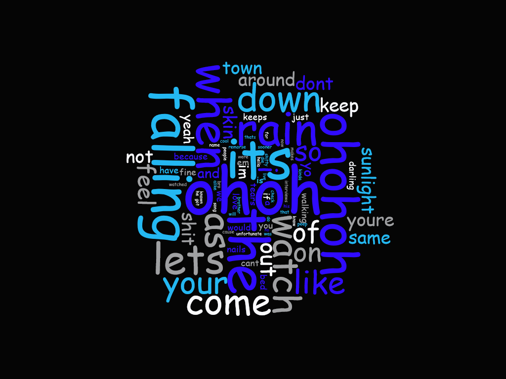

Lil Peep & XXXTENTACION - Falling Down
The reason I choose this song was mainly because both of these artist had recently passed away last year. The way I stumble upon this song was one day, I was scouting through YouTube videos of Fortnite and in one of the videos this song was the intro to one of the Fortnite Video I watched. After that I search through comments to find the name of the song. This song made it to the Billboard on the week of October 6,2018 holding the spot #13 on the top 100. The top words in this song were “ohoh”,”its”, “falling” and “the”. I actually wasn’t surprised about the word “Falling” being one of the top words that was repeated during the song since the title of the song is called “Falling Down”.
The data structure I choose for this assignment was the HashMap. The HashMap would store two different types of data such as a Key and a Value. To access the Value you are looking for, the user must know the Key to retrieve its value. The reason I choose this data structure was because it was very efficient in collecting data and easy for updating the data every time a word reappears. If I had more time to work on the project, I would definitely focus more time on the HTML part as this was my first time learning HTML. The benefit of using the HashMap is that the items based on a key that can be used to retrieve the item at a later point.